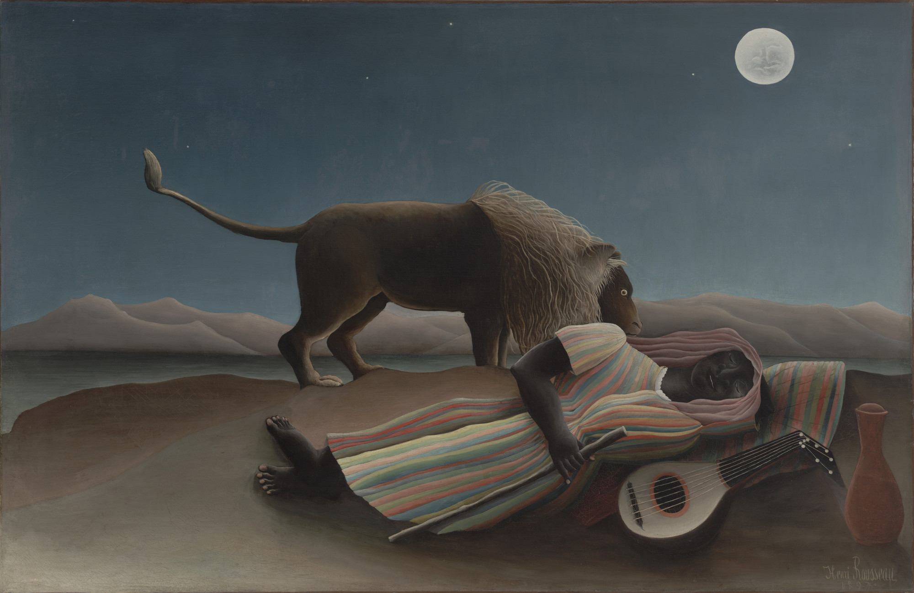

The body travels from lower left toward upper right; the lion's back and tail answer with a counter-curve. A dark interval between them is part breath, part withheld event. The moon closes the eye's slow circuit.
Deep blue-black and indigo hold the night; muted ivory carries moonlight; ochre and earth gold give the cool scene a pulse.
Moonlight becomes flat, stage-like illumination; fur is arranged in rhythm, while plants and mandolin turn into pattern. Rousseau removes perspectival noise and keeps symbolic relations.
He worked in the Paris customs service before painting full-time in his forties. Without academic training, his frontal imagination changed modern painting. The lion may be predator or dream guardian; the uncertainty is the pulse.
Henri Rousseau, The Sleeping Gypsy, 1897. Source: MoMA object record and image page, object no. 646.1939. Reproduction, redistribution and commercial use remain subject to MoMA licensing notes, source terms and local law. Copyright belongs to the original artist and relevant image-rights holders; appreciation by Daily Art.